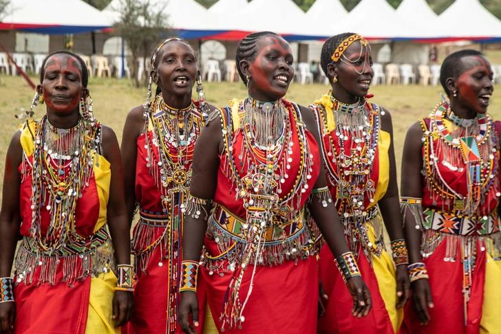
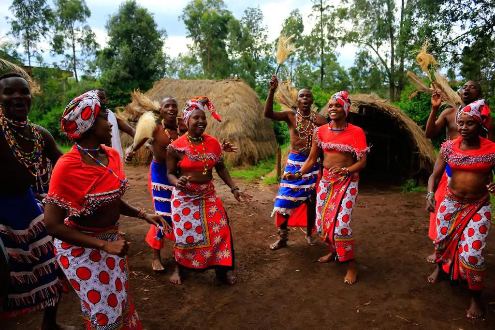
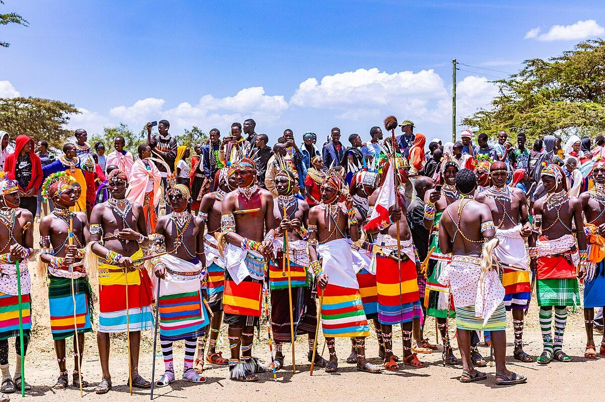
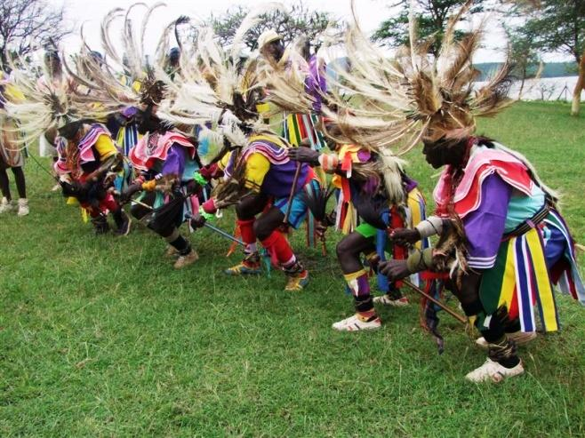
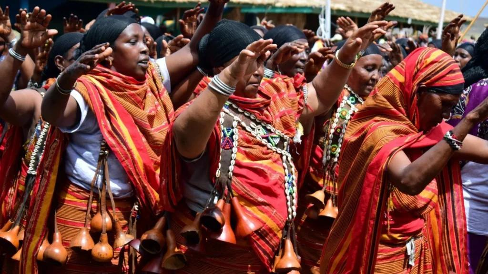
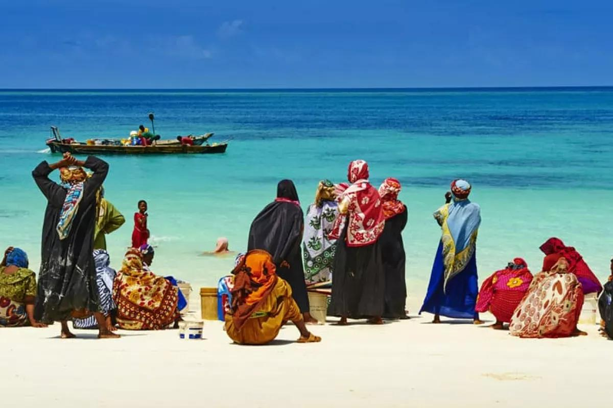

Kenya Cultural
Heritage Hub
Discover the history, migration, traditions, and living heritage of Kenya's four great ethnic families — Bantu, Nilotes, Cushites, and Semites.

A Tapestry of
Diverse Heritage
Kenya is home to over 42 distinct ethnic communities, each woven into a rich national fabric through centuries of migration, trade, and cultural exchange. From the fertile central highlands to the arid northern plains and the Indian Ocean coast, each environment shaped a unique way of life.
This platform explores four linguistic families that make up Kenya's people: the agricultural Bantu, the pastoralist Nilotes, the nomadic Cushites, and the coastal-trading Semites. Understanding their origins and cultures is essential to understanding Kenya.
Kenya's Four Ethnic Families
Each community carries a distinct history of origin, migration, governance, and culture. Click any card to begin learning.
Bantu – Kikuyu (Agĩkũyũ)
The largest Bantu group in Kenya, famed for their rich agricultural tradition, council governance, and central highland roots.
Learn More arrow_forward
NilotesNilotes – Luo
A Nilotic people settled along Lake Victoria's shores, celebrated for their fishing prowess, vibrant music, and clan-based governance.
Learn More arrow_forward
CushitesCushites – Borana
Cushitic pastoralists from northern Kenya, known for their democratic Gadaa system and deep camel-herding traditions.
Learn More arrow_forward
SemitesSemites – Arab (Swahili)
Coastal traders and settlers whose Arab Semitic heritage shaped the Swahili language, architecture, and Indian Ocean commerce.
Learn More arrow_forwardReady to Test What You've Learned?
Take our interactive quiz covering all four communities and discover how much you know about Kenya's cultural heritage.
Start the Quiz